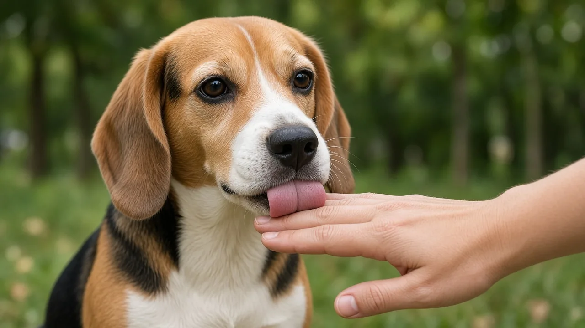

Why do dogs lick people? Greeting, taste and sometimes stress
Dogs lick people for several overlapping reasons: as a friendly greeting learned from puppyhood, because skin tastes of salt and lotion, to get attention, and sometimes as a stress or appeasement signal. Soft face or hand licks when you come home are usually social. Constant licking of floors, carpets or walls is different and has been linked to gastrointestinal disease in veterinary research.

Greeting and social bonding
Puppies lick the mouths of adult dogs during food sharing and greeting. That early pattern often carries into life with people: a lick on the hand or face can be a polite hello. The American Kennel Club lists affection and greeting among the common reasons dogs lick owners, along with exploration and taste. Reward based training still works if you prefer less licking: calmly turn away, then reward a sit when the dog stops (see reward based training).
Taste, salt and leftover food smells
Human skin carries salt from sweat, plus lotions, food crumbs and toothpaste residue. Dogs explore the world with their tongues and noses. A lick can simply be information gathering, the same way sniffing hands is. That does not make dog saliva a disinfectant myth; it is exploration, not a cleaning product.
Attention and learned habits
If licking reliably earns pets, laughs or food, dogs will do more of it. That is ordinary learning, not spite. Teach an alternate greeting such as sit, then reward that instead. Keep sessions short and consistent.
Stress, appeasement and lip licking
Quick lip licks when no food is around are classic stress signals, listed alongside yawning and a lowered body in behaviour guidance (see reading stress and why dogs yawn). Full body licking of a person can also show up when a dog is unsure. Give space, lower the pressure, and avoid forcing cuddles.
When licking needs a vet
In a 2012 study in the Journal of Veterinary Behavior, Becuwe-Bonnet and colleagues examined 19 dogs that licked surfaces excessively. Fourteen had gastrointestinal problems such as inflammation, delayed stomach emptying, pancreatitis or giardia. After treatment, licking improved in many of the dogs followed up. Sudden frantic licking of people, paws or surfaces, plus vomiting, diarrhea, weight loss or appetite change, is a reason to call your vet (see health basics and why dogs eat grass).
- Soft greeting licks: usually social; redirect if you prefer less.
- Lip licks in tense moments: read as stress, not guilt.
- Obsessive surface licking: ask a vet about medical causes.
Frequently asked questions
Why do dogs lick people?
Common reasons include friendly greeting, exploring taste and smell on skin, seeking attention, and sometimes stress or appeasement. Context tells you which fits.
Is dog licking always affection?
No. Licking can also be taste seeking, a learned way to get attention, or a stress signal. Soft greeting licks are often social; frantic or constant licking needs a closer look.
Should I let my dog lick my face?
That is a personal choice. Mouths carry bacteria. If you prefer not to, turn away calmly and reward a sit instead of scolding.
When is licking a medical problem?
Excessive licking of floors, carpets or walls has been linked to gastrointestinal disease in a 2012 veterinary behaviour study. Sudden obsessive licking with other illness signs needs a vet.
How do I stop unwanted licking?
Do not punish. Remove the reward by stepping back, then reward an alternate behaviour such as sit. Keep practice short and consistent.
Sources
- Why Do Dogs Lick People?, American Kennel Club
- Bécuwe-Bonnet V, Bélanger MC, Frank D, Parent J, Hélie P (2012). Gastrointestinal disorders in dogs with excessive licking of surfaces. Journal of Veterinary Behavior 7(4):194 to 204. DOI 10.1016/j.jveb.2011.07.003, Elsevier
- Position Statement on Humane Dog Training (2021), American Veterinary Society of Animal Behavior
General education only, not veterinary advice. If you are worried about your dog, contact your vet; in an emergency, contact an emergency vet straight away.